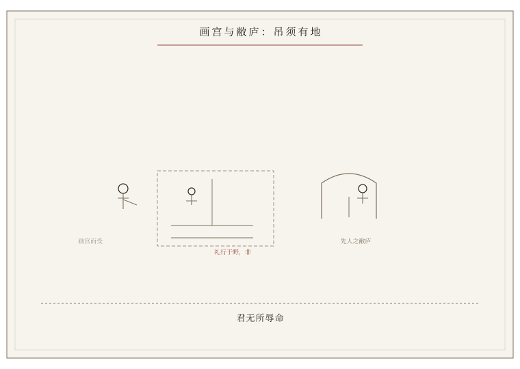

檀弓下 · 四·六十三 · 第 388 课
哀公使人吊蕢尚，遇诸道，辟于路，画宫而受吊焉。曾子曰：「蕢尚不如杞梁之妻之知礼也。齐庄公袭莒于夺，杞梁死焉。其妻迎其柩于路而哭之哀，庄公使人吊之，对曰：『君之臣不免于罪，则将肆诸市朝，而妻妾执；君之臣免于罪，则有先人之敝庐在，君无所辱命。』」
说什么事：鲁哀公派人吊蕢尚，在路上遇着了。于是在路上避开，在地上画出宫室的形状，就那里受吊。曾子说：「蕢尚不如杞梁之妻知礼。齐庄公袭莒，杞梁战死。其妻在路上迎柩，哭得哀。庄公派人吊她，她答：『君之臣若不免于罪，就该陈尸于市朝，妻妾也该被拘执；君之臣若免于罪，那么先人的破屋还在，君不必在这里辱命。』」
落在哪一层：以「有位可受」定吊。吊不可在野。
为何编在此位：上节论使节之私，此节论受吊之地。一在公事上守分，一在丧地上守分。
【经】哀公使人吊蕢尚，遇诸道，辟于路，画宫而受吊焉。曾子曰：「蕢尚不如杞梁之妻之知礼也。齐庄公袭莒于夺，杞梁死焉。其妻迎其柩于路而哭之哀，庄公使人吊之，对曰：『君之臣不免于罪，则将肆诸市朝，而妻妾执；君之臣免于罪，则有先人之敝庐在，君无所辱命。』」
【注】哀公，鲁君也。画宫，画地为宫象。／行吊礼于野，非。／鲁襄二十二年「齐侯袭莒」是也。《春秋传》曰：「杞殖、华还载甲夜入且于之隧」，隧、夺，声相近，或为兑。梁即殖也。／肆，陈尸也。大夫以上于朝，士以下于市。执，拘也。／无所辱命，辞不受也。《春秋传》曰：「齐侯吊诸其室。」
【疏】此一节论蕢尚不如妇人得礼之事。／案《周礼·乡士职》云：「协日刑杀，肆之三日。」是陈尸曰肆也。云「大夫以上于朝，士以下于市」者，谓诸侯、大夫、士也。故襄二十二年楚杀令尹子南，尸诸朝三日。大夫既于朝，士则于市也。其天子臣则有爵者皆适甸师氏，不在朝，故《周礼·掌囚职》云：「凡有爵者，奉而适甸师氏，以待刑杀。」《掌戮》云「有爵者杀之于甸师氏」是也。天子士宜在朝，与诸侯大夫同。
蕢尚 鲁人。
遇诸道 在路上遇见。
辟于路 避开道路。
画宫 在地上画出宫室的形状。
受吊 接受吊问。
杞梁 齐大夫杞殖。
袭莒于夺 袭莒，战于夺。夺，地名。
肆诸市朝 陈尸于市或朝。
执 拘执。
敝庐 破旧之屋，谦称自家。
辱命 使君命受辱，即「劳您在这里吩咐」。
哀公派人吊蕢尚，在路上遇着了。于是在路上避开，画地为宫，就在那里受吊。曾子说：「蕢尚不如杞梁之妻知礼。齐庄公袭莒，杞梁战死。其妻在路上迎柩，哭得哀。庄公派人吊她，她答：『君之臣若不免于罪，就该陈尸于市朝，妻妾也该被拘执；君之臣若免于罪，那么先人的破屋还在，君不必在这里辱命。』」
此章记两场吊。一场在野，画地为宫；一场在人家的破屋里。
曾子取后者，不取前者。
第一层 「遇诸道，辟于路」 吊者与丧者在路上相遇。
此一相遇，本无不可。 问题是：在哪里行礼？
第二层 「画宫而受吊」 在地上画出宫室之形，就在其中受吊。
此一做法，是把「无位」补成「有位」。 画宫者，画其象，不画其实。
曾子断为「不如」，其理由注已给出：「行吊礼于野，非。」
第三层 何以为非 吊之礼，须在「有所」之处：或宫，或庐，或墓。
吊所吊者，是「此家有人死」这件事；而「此家」须有一个地址。 在野受吊，则「家」不在场，所吊者只是一个在路上的人。
第四层 杞梁之妻的两句 第一句：「君之臣不免于罪，则将肆诸市朝，而妻妾执。」
此句先设想最坏的情形：若我夫有罪，则该陈尸于市朝，我该被拘执——那时君来吊我，是不合的。
第二句：「君之臣免于罪，则有先人之敝庐在，君无所辱命。」
此句给出正解：若无罪，则我家有屋，请到屋里来。
第五层 「敝庐」二字的分量 「敝」是谦辞，也是实情——一个战死者的家，未必有华屋。
而她不说「请至某处」，只说「有敝庐在」。此一「在」字，是全部的底气：我有一个可以受吊的地方。
第六层 其所以为知礼 疏云「论蕢尚不如妇人得礼之事」。
一个妇人在路上哭夫，仍然知道「吊须有地」；一个鲁人在路上受吊，却画地为宫。
礼之知与不知，不在男女，不在贵贱，在是否知道「此事该在何处办」。
第七层 「君无所辱命」的分寸 此语看似拒君，实则护君。
若在此受吊，则君之吊成于野外，君之礼失其地；不受，则君改日临其室，君之礼得其正。
拒的是此时此地，护的是君与礼。
与今日何干 今之慰问，多在微信群、在饭局、在走廊。
此章给一句：该在屋里办的事，不要在路边办。
| 左 | 右 |
|---|---|
| 蕢尚 | 在路上 |
| 画宫而受吊 | 无位而补位 |
| 吊于野 | 非 |
| 杞梁之妻 | 在路上迎柩 |
| 肆诸市朝 | 设想最坏 |
| 先人之敝庐在 | 有位可受 |
| 君无所辱命 | 拒此时此地 |
| 不如妇人知礼 | 曾子之断 |
| 吊须有地 | 全章之要 |
画道路旁的一块平地，视点略俯。地上以细线画出一个方框，框内再画一道门形与两级台阶，示为画出来的宫室。框内一人形跪坐，双手前举。框外立一人形，手持一卷，作俯身慰问之状。画面右侧另有一处小屋，屋只画一檐一柱，檐下亦有一人跪坐。不画文字。赭色只用在地上方框的门形一处。
